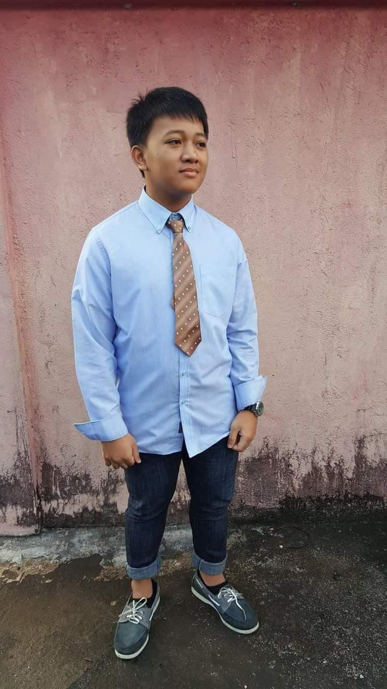

Playing outdoors is what I like when I was a childhood, though I also play games before 1. Playing agaw base,running back and forth in order to win and even circling the blocks around the town in order to win unnoticed 2. I also play pogs which is very popular before, I have plenty of it before because I’m good at it I guess 3.It was also a source of income to me, I will sell it then play with the buyer to get it back, pretty cunning right 4.There is a technique called “kahig” in pogs its when you strike it diagonally it is easier to make it go upside down 5. That’s why I got plenty of pogs before because I mastered that technique6. It also has a type of game which is called banker you will gain much faster with this one but it is based on luck that’s why its unreliable7. Having just 5 pesos was enough to make me happy I can play my favorite video games Yoshi and Mario, and play Grand Theft Auto San Andreas 8.It is also that time when I got the scar I have on my nose9 I fall while playing at a bunch of logs which has nails on it, over the time it didn’t come off sad to say10. What I really like the most before is boom sak, and bente uno11.I remember that time when I was playing boom sak someone had to go fully naked in order to blend with the dark and it actually work, how hilarious is that he was chasing the taya while naked12. I like bente uno because it has many participants and its like aroyal rumble game, where you can change the tide of the game yourself13. Running around the town was really great, one of the reason why I was physically fit back then and I can also compete who run the fastest14. There is a game before an adventure Pokémon that can be play online in web, I forgot the name but I really like it, there’s so many legendary Pokémon that you can catch it’s beautifully made15. As I was skilled in playing that I actually used it as an excuse to play free in computer shop,the son of the owner always want my assistance because he didn’t know what to do16. Little did he know that I was the one on the chair and I was the one playing, I guess I’ll just call that clever17. Counter Strike is actually pretty popular then,and also lasers18. The whole players in the shop would compete in a death match in counter strike and compare scores to see who will be the best19. Laser is actually one of my bad decision before, I always challenged people to 1vs1 laser in the eye of who can withstand longer, I think its one of the reason my eye got bad20.
This year was when I started my high school days, it’s also when I got circumcised exactly 13 years old1. When I was grade 7 I’m still fond of studying so I always play lots and lots2. Here is when my first intrams where I participate began, I join in the chess but I suffered defeat as my opponent where trained since their childhood days3.Whenever there was no teacher, we would play monopoly in class to pass time, sometimes I bail out of school even when there is still classes going on4. In our school all students is assigned on days e.g Monday, to perform cleaning on school, and even with that I always disappear first to avoid it5. I Thought then, why would I clean I am in a private school got a janitor, that’s why I always leave but later I realize It was to teach us manners and how to do things at your house6.I think it was grade 9 when I act in a play as a water that waves, as I am bad at acting I always laugh at serious scenario7.My most favorite occasion back then was the birthday of a classmate, as I get along with almost all of them I am always invited, good it is to fill your belly that time8. That was the time when I was getting chubby as I was tasting the wonders of good food, that I don’t eat before9. It was grade 10 that I got addicted to DOTA(Defense Of The Ancients), I play a key role in games with big wager especially DOTA10.I would always join in tournament and they made me captain because I’m good11. There was even a time where guys from other town came and bet their money, was a pretty close game but we won, at that time when your hair is emo you are actually feared by players12. Then, the time came the I think it was called congressional meet, various parts of quezon province, came to our town, reina, islander, lucban, and many moreit was to compete in sports13. There are so many beautiful girls at that time that’s why I enjoy watching, but their skillsare really top tier in my eyes especially reina14. I forgot who won at that time but at least our town got some gold medal in some sports15.When I was in senior high our school got renovated, plenty of things came even tv’s put in every classroom16. It was used by us without the teachersconsent whenever we are bored we would watch movies and collaborate whether the teacher are coming17. Oh, we also did NCAE that time and I gota pretty good score though my predicted occasion is “undecided”, some of my classmates got priest and it was hilarious because its so far withwhat they want18. At grade 12 when they are giving grades I am actually became part of the honors list, I don’t know how because I always slack at school, but my exam got good score19. Then I graduated senior high and find where I could exam for colleges schools20.
After I graduate from senior high, I go to different places to take college entrance exam, UP exam, SLSU exam, and UE exam1.The exam at UP were really hard it took me 6 hours, and I’m not even 80% done2. Well obviously since its hard, I failed since I didn’t do any review and I underestimated it3. Then I took up SLSU and UE exam, I passed both since its on moderate level not hard, I choose UE because I want to be far in my province and see new sights4. Then it was the first day of class in UE, well I actually got lost inside the campus so I had to ask a question to someone and so I did5. After that I found my room which is I think cs204 If I remember it right6. The first day is so hard for me because I don’t know anyone, and most of them know each other because they go to UE at senior high7. Then troy ask me if this room is cs204, that’s when I started to make friends, we talk little by little a week we got accustomed to each other and become friends8. They actually said that if I speak I always seemed mad, but that is just my accent here in Quezon my voice is a little bit loud and fast I think9.We would eat at the shop with the nanay that says “ate kuya kain na”, budget meal and not that bad in taste10. When there is a vacant time its time for the tusok tusok, which eliminate my remaining coins, its just beside gastam gate convenient and close11. What I will not forgot was the powhiri, it was so good I am the front when the band starts rocking, jump jump jump yeahh!12 Barry slipped when its so muddy when we are jumping in tune with the band, covering his entire clothes with mud.13 After that there was the seagames fencing tournament at paco arena, and what did I just witness the players moves are too fast, there was one guy who fight eye to an eye with UE and it was a real exciting match.14 but in the end UE won with the gold medal and even the girls team with Samantha won it.15 There was also a time where UE experience some disaster I think its fire or earthquake, though I already got home I saw it live in fb and the students gather at the wide open space near gastam gate.16 When we are almost done with first year, that’s when the covid spread enough in our country to cancel out every classes in school.17 After that I immediately got home at march 8 when they officially announce that we passed and we don’t need to continue the finals.18 That was when the online class began, I actually am not that sure If I want to attend classes like that but since I don’t want to be held back 1 year, I thought its good it’s a new experience. 19 I past first semester thankfully and even got scholar, then I started second semester and here I am now.20